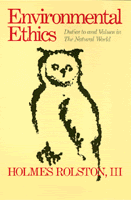

<body bgcolor="#FFFFFF" text="#000000" link="#0000FF" vlink="#CC0000" alink="#CC0000"><center><hr width="350" size="1" align="center" noshade>A systematic account of values carried by the natural world<hr width="350" size="1" align="center" noshade><p><a href="https://cdcshoppingcart.uchicago.edu/Cart/ChicagoBook.aspx?ISBN=9780877225010&&PRESS=temple" target="_top">Buy this book!</a> | <a href="https://cdcshoppingcart.uchicago.edu/Cart/Cart.aspx?PRESS=temple" target="_top">View Cart</a> | <a href="https://cdcshoppingcart.uchicago.edu/Cart/Cart.aspx?PRESS=temple" target="_top">Check Out</a></p><p></p></center><!--none//--><h1>Environmental Ethics</h1>
<H2>Duties to and Values in the Natural World</H2>
<h3>Holmes Rolston, III</h3>
<P>cloth 0-87722-501-X $69.50, Oct 87, <FONT COLOR=#990033>Available</FONT>
<br>paper 0-87722-628-8 $39.95, Apr 89, <FONT COLOR=#990033>Available</FONT>
<br>Electronic Book 1-43990-391-3 $39.95 <FONT COLOR=#990033>Available</FONT>
<BR> 408 pp
6x9
</P><h3 align="center"><P><font color="#996633">Holmes Rolston III, has been named the 2003 Templeton Prize laureate. The prize, valued at more than one million dollars, is given each year to a living person to encourage and honor those who advance spiritual matters.,
2003</font></P>
</H3>
<BLOCKQUOTE><I>"By refusing to be pulled toward either an economics-based or a biocentrist position, Rolston bridges an otherwise yawning gap between the two camps.... A model of the environmental thinking-and acting-required now and in the future."</I>
<br>&#151<b><I>Christian Science Monitor</I></b><I></I></BLOCKQUOTE>
<p><I>Environmental Ethics</I> is a systematic account of values carried by the natural world, coupled with an inquiry into duties toward animals, plants, species, and ecosystems. A comprehensive philosophy of nature is illustrated by and integrated with numerous actual examples of ethical decisions made in encounters with fauna and flora, endangered species, and threatened ecosystems. The ethics developed is informed throughout by ecological science and evolutionary biology, with attention to the logic of moving from what is in nature to what ought to be.
<p>The ethical theory is applied in detail to social, public, and business policy. Written in an engaging style, using diagrams and figures as well as numerous case studies, <I>Environmental Ethics</I> prods the reader into concrete application and invites reader participation in the ethical discussions. The ethics concludes by exploring the historical experiences of personal residence in a surrounding environment. Here is an adventure into what it means to live as responsible human beings in the community of life on Earth.
<BR>&nbsp;<h2>Excerpt</h2><P>Excerpt available at <a href="http://www.temple.edu/tempress">www.temple.edu/tempress</a></p>
<BR>&nbsp;<h2>Reviews</h2>
<p><I>"Rolston's incisive logic...poetic insights...and almost conversational style reassure the reader.... With luck, lots of people will accompany him on this journey, returning with ideas with which to launch sophisticated discussions of environmental ethics."</I>
<br>&#151<b><I>Los Angeles Times Book Review</I></b>
<p><I>"A brilliantly provocative challenge for us to think about how we should behave toward the environment. A required book for public and natural science collections."</I>
<br>&#151<b><I>Library Journal</I></b>
<p><I>"Rolston's work&#151worthy of becoming a classic itself&#151explores values from several points of view. The work is not a carefully structured argument, but a delightful series of insights and concrete examples leading to a new gestalt a unique groundbreaking work appropriate for all reader levels."</I>
<br>&#151<b><I>Choice</I></b>
<p><I>"A lucid introduction to environmental ethics that will be of value to scholars, students, and general readers. </I>Environmental Ethics<I> is packed with information and a good deal of wisdom obviously acquired through long experience."</I>
<br>&#151<b>Edward 0. Wilson</b>, Harvard University
<p><I>"Most insightful and poetic. We need...Rolston's wisdom."</I>
<br>&#151<b>Kristin Shrader-Frechette</b>, <I>Sierra</I>
<p><I>"Rolston's analysis is perceptive philosophy yet accessible to a general audience. His comprehensive scope, accurate references, examples given, and clarity of text make the book invaluable to students of environmental ethics in a very practical way.... Rolston clearly makes the case that we now find ourselves standing at an ethical threshold. . What a wonderful effort!"</I>
<br>&#151<b>David Hales</b>, School of Natural Resources, University of Michigan
<p><I>"This work is vintage Rolston, which is very good. He has a wonderful and intimate knowledge of matters environmental, which he again uses here in insightfully new ways.... Rolston shows the relevance of an environmental appreciation to fundamental matters of ethical theory. This book reads well, reads easily, reads enticingly."</I>
<br>&#151<b>Donald Scherer</b>, Department of Philosophy, Bowling Green State University
<BR>&nbsp;<h2>Contents</h2><P>
<p>Preface
<p>1. Humans Valuing the Natural Environment
<br><i>Values Carried by Nature &#149
Value Ownership &#149
Following Nature</i>
<p>2. Higher Animals: Duties to Sentient Life
<br><i>Natural Rights, Goods, Interests &#149
Human Dominion over Animals &#149
Domestic and Hunted Animals</i>
<p>3. Organisms: Duties to Organic Life
<br><i>Objective Value in Organisms &#149
Objective Life versus Subjective Life &#149
Human Interests and Organismic Values</i>
<p>4. Life in Jeopardy: Duties to Endangered Species
<br><i>Duties to Persons Concerning Species &#149
Specific Forms of Life &#149
Duties to Species &#149
Individuals and Species &#149
Species and Ecosystem &#149
An Endangered Ethic?</i>
<p>5. Life in Community: Duties to Ecosystems
<br><i>Cooperation and Struggle &#149
Centered and Loose Organization &#149
Succession and Natural History &#149
Individuals in Communities &#149
Intrinsic, Instrumental, and Systemic Values &#149
Subjective Experience and Evolutionary Ecosystems</i>
<p>6. The Concept of Natural Value: A Theory for Environmental Ethics
<br><i>Valuing Projective Nature &#149
Valuing in Ecosystems &#149
Valuing Aesthetic Nature</i>
<p>7. Environmental Policy: An Ethic of the Commons
<br><i>Collective Choice in an Environmental Ethic &#149
A Value Analysis for Environmental Policy &#149
Environmental Principles and Strategies</i>
<p>8. Environmental Business: An Ethic for Commerce
<br><i>Business and a Humanist Environmental Ethic &#149
Business and a Naturalistic Environmental Ethic &#149
Ethical Complexities in Business and Environmental Concerns &#149
Business and Nature</i>
<p>9. Down to Earth: Persons in Natural History
<br><i>Humans Resident in Nature and Culture &#149
Humans as Moral Overseers on Earth &#149
Storied Residence on Earth</i>
<p>Notes
<br>Selected Bibliography
<br>Index
</P><BR>&nbsp;<H2>About the Author(s)</H2>
<table><tr><td valign="top"><img src="/tempress/authors/489_au.gif" height="90" width="75"></td><td width="100%" valign="middle"><p><b>Holmes Rolston, III</b>, is Professor of Philosophy at Colorado State University and the author of <I>Science and Religion: A Critical Survey</I> (Temple).</P></td></tr></table>
<BR><H2>Subject Categories</H2>
<p><A HREF="/tempress/nature.html" TARGET="_top">Nature and the Environment</a>
<BR><A HREF="/tempress/philosophy.html" TARGET="_top">Philosophy and Ethics</a>
</p>
<BR><h2 class="inpageheading">In the series</H2>
<P><I><a href="http://www.temple.edu/tempress/ethics_action.html" onMouseOver="window.status='Click for other books in this series!'; return true;" onMouseOut="window.status=''; return true;" target="_top">Ethics and Action</a></i>, edited by Tom Regan.
</p><p>No longer active.</p>
<p align="center"><a href="https://cdcshoppingcart.uchicago.edu/Cart/ChicagoBook.aspx?ISBN=9780877225010&&PRESS=temple" target="_top">Buy this book!</a> | <a href="https://cdcshoppingcart.uchicago.edu/Cart/Cart.aspx?PRESS=temple" target="_top">View Cart</a> | <a href="https://cdcshoppingcart.uchicago.edu/Cart/Cart.aspx?PRESS=temple" target="_top">Check Out</a></p><p><font face="Arial" size="1"><a href="copyright.html" onMouseOver="window.status='Web Copyright Policy';return true;" onMouseOut="window.status=''" title="Web Copyright Policy">&copy;</a> 2015 <a href="http://www.temple.edu" target="new" onMouseOver="window.status='Link to Temple University home page';return true;" onMouseOut="window.status=''" title="Link to Temple University home page">Temple University</a>. All Rights Reserved. http://www.temple.edu/tempress/titles/489_reg.html</font></p>